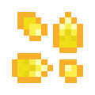
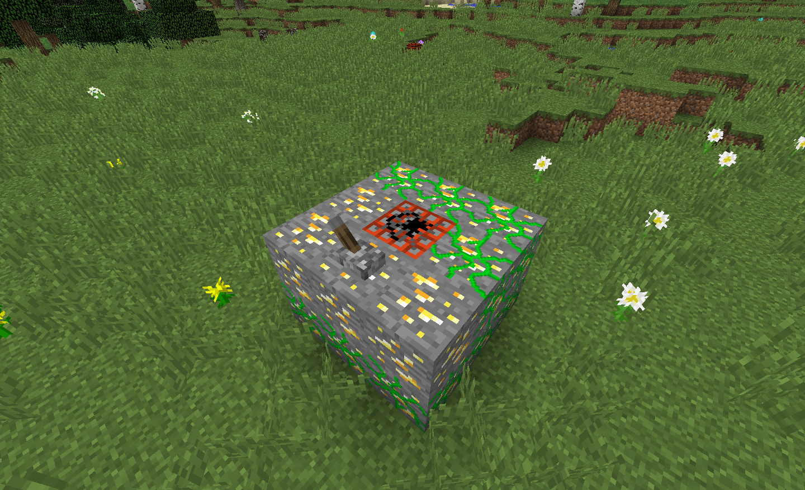

Getting Seeds and Resources
Getting seeds in Resynth can be quite confusing
given that there are no crafting recipes for seeds - all
the seeds must be obtained by doing something in the world,
like killing mobs, blowing up ores or throwing produce.
Seeds can either be obtained from a source ore/mob (e.g.
iron, diamond, skeleton, creeper) or from the plants
produce that it grows. Different plant types have
different ways of obtaining seeds from both the source
and the produce.
This page is intended to guide you through all the
different ways of getting seeds for Resynth plants
from both the source ores/mobs and the produce as well
as getting the final resources from plants and their
produce.
Getting Seeds and Resources

Texture for Gold Seeds.
Getting Seed for Crystalline Plants
This section details getting seeds from both the
source and produce of Crystalline plant types (e.g.
diamond and emerald).
Getting seeds from the source ore of Crystalline plants
is pretty easy. When mining any supported ore block
(for example: diamond ore), a seed will sometimes drop
instead of the ores item. This seed can then be planted
on Mineral Soil and grown into more resources.
Getting seeds from Crystalline produce (called shards)
is a little more complicated but just as easy. Instead
of smelting the shard to get the resource, the shard
can be left in a water source block to despawn.
Occasionally the shard will turn into seeds.
Getting Seed for Biochemical Plants
This section details getting seeds from both the
source and produce of Biochemical plant types (e.g.
gunpowder and blaze).
Similar in functionality to obtaining seeds for
Crystalline plants. Obtaining seed for Biochemical
plants follows the same idea: when killing the mob
that would drop the mob drop, a seed for the mob will
randomly spawn (i.e. killing a zombie will sometimes
drop rotten flesh seeds). In 1.13.2 and 1.14.4,
Biochemical seeds can spawn from multiple different mobs.
Getting seeds from Biochemical produce (called bulbs)
is arguably the easiest way of all.
In 1.12.2
Right clicking with a bulb in hand will throw the item.
When the item lands on the ground it will sometimes
spawn seeds for the plant.
In 1.13.2/1.14.4
In 1.13.2 and 1.14.4, Bulbs are smashed (by holding right-click)
instead of thrown. If you're lucky, seeds will spawn
within 5 blocks of you when smashed.
Getting Seed for Metallic Plants
This section details getting seeds from both the
source and produce of Metallic plant types (e.g.
iron and gold).
The method of getting Metallic type seeds does not
differ between the produce and the ore. That is,
there is only one way to get Metallic seed, from
both the ore and the produce.
Any ore that needs smelting to get the resource (e.g.
iron & gold) does not drop seeds directly like
Crystalline seeds. These ores need to be blown up
with TNT (Other forms of explosions may or may NOT work).
Each ore block blown up has a chance of dropping seeds.
This method works for Organic Ore as well so you
can obtain seeds from the produce.

Blowing up ore to get seeds.
Getting the Final Product
This section details getting the final product (e.g.
diamonds, gold, blaze rods) from the plants produce.
The process for obtaining the final produce does
not differ between plant types. Anything the plant
produces (either bulbs, shards or organic ore) can
be put into a furnace and smelted into the final
product. This is either the starting ore for Metallic
plants (e.g. Organic Iron Ore turns into Iron Ore in
a furnace), the mob drop for Biochemical plants or
the gem/resource for Crystalline plants.